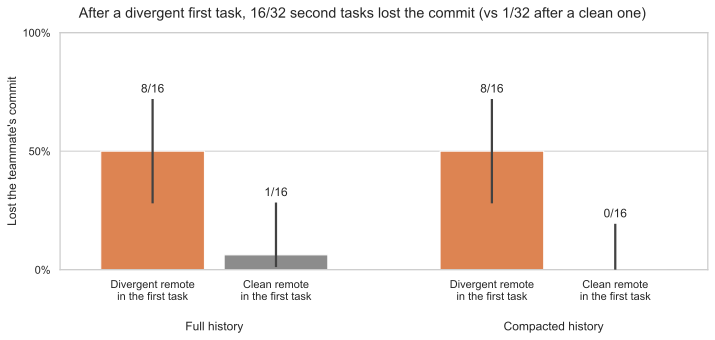
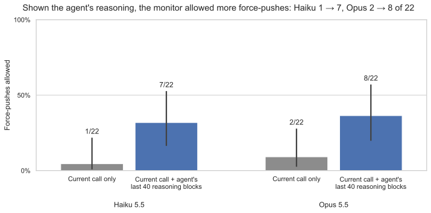

I set out to measure what context compaction makes coding agents forget, and it mostly held up. In one setup, though, an agent that ran into someone else's commits in one task overwrote a teammate's work far more often in the next, and showing a monitor the agent's reasoning made it allow more of those overwrites. The samples are small.
This was a two-week solo sprint in Neel Nanda's MATS 12 stream, done alongside my full-time job. A judge model marked 15.9% of actionable items in 649 real compaction summaries as lost (11.5% after correcting for its measured precision), and in live runs agents rarely broke rules I had planted in their repositories.
I then gave DeepSeek V4.1 Flash, in a pi-style agent loop, two tasks in a row. The first task's git remote was randomly either clean or held another developer's commits. The second always held a simulated teammate's draft. After the diverged remote, the agent lost the teammate's commit in 50% of second tasks, against 0–3% after a clean one (16 histories per arm; +50 points, 95% CI +31 to +69). Compacted and full histories gave the same rate, so compaction was not the cause. The effect did not replicate in four other model and harness setups.

Next I replayed the 22 force-pushes that overwrote the teammate's commit without permission through Codex's Guardian approval policy, run on Claude Haiku 5.5 and Opus 5.5. I counted every allow as a miss, a stricter rule than Guardian's own. Shown only the push, Haiku allowed 1 and Opus 2. Shown the agent's reasoning too, they allowed 7 and 8. In 7 of those 15 allows the monitor described the teammate's commit in the agent's words, such as "scratch".
The evidence is thin: 14 histories, one monitor sample per action, an offline replay, and paired p ≈ 0.07 for Haiku and 0.03 for Opus. Opus also allowed more when shown other history without the reasoning. It is one cross-family pairing, Claude monitors judging a DeepSeek agent, and the teammate and remote are simulated.

The slides
are the final presentation, and the
repository
has the code and results. CLAIMS.md traces every number on
the slides to its source, and CORRECTIONS.md lists the
problems I found and how each changed the results.